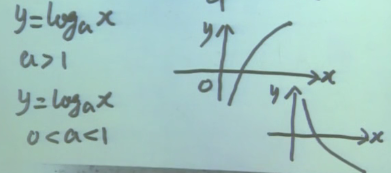
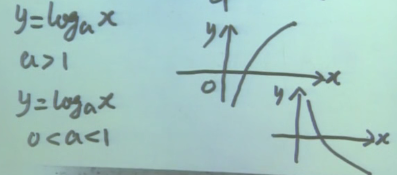

函数
函数是微积分的研究对象
一、有界函数
1.1 定义
设 y = f(x)x∈D
∃常数N≤M（∃ 表示存在），∀x∈D 都有 N≤f(x)≤M（∀ 表示一切）
则称 f(x) 在 D 上有界，f(x) 为 D 上的有界函数。N 为 f(x) 的一个下界，M 为 f(x) 的一个上界
1.2 延伸
∃常数N，∀x∈D都有N≤f(x)，则称 f(x) 为有下界函数
∃常数M，∀x∈D都有f(x)≤M，则称 f(x) 为有上界函数
注：一个函数只要有一个下界，就有无数个下界，因为还有无数比它小的数。上界同理
1.3 定义的演变
∃常数M>0，∀x∈D都有∣f(x)∣≤M⇔−M≤f(x)≤M
则称 f(x) 在 D 上有界，f(x) 为 D 上的有界函数
1.4 附注
A⇒B，表明 A 是 B 的充分条件
注：福建人可以推出中国人，所以福建人是中国人的充分条件，中国人是福建人的必要条件
A⇐B，表明 A 是 B 的必要条件
注：A的充分条件是B = B是A的充分条件，指B推出A；A的必要条件是B = B是A的必要条件，指A推出B
二、无界函数
2.1 定义（有界函数的定义反过来写）
∀常数M>0，∃x∈D使得∣f(x)∣>M
则称 y=f(x) 在 D 上无界，y=f(x) 为 D 上的无界函数
三、复合函数
3.1 定义
设 y=f(u)，u∈D(f)
u=ψ(x)，u∈R(ψ)
D(f)∩R(ψ)=∅
称 y=f(ψ(x)) 为 x 的复合函数。x 为自变量，y 为因变量，u 为中间变量，y=f(u) 为外函数，ψ(x) 为内函数
3.2 说明
- 限制 D(f)∩R(ψ)=∅，因为诸如 y=u，u=−(1+x2)⇒y=−(1+x2) 是没有意义的
- 事实上，在判断 y=f(u) 和 u=ψ(x) 能否进行复合时，只需确定 y=f(ψ(x)) 的定义域不为空即可
3.3 附注
D(f) 表示 f 的定义域，R(ψ) 表示 ψ 的值域
四、反函数
4.1 定义
设 y=f(x)x∈D
∀x1,x2∈D且x1=x2，都有f(x1)=f(x2)，即y=f(x) 为一一对应关系。说明 ∀y∈R(f) 存在唯一的 x∈D(f) 与之对应
满足上述条件的一个定义域在 R(f) 上的函数 x=f−1(y)，称为 y=f(x) 的反函数
- 对于 x=f−1(y)，自变量是 y。不过习惯上自变量用 x 表示，因变量用 y 表示，因此将反函数改写为 y=f−1(x)
- 反函数的定义域是函数的值域
- f−1(x) 的图像与 f(x) 的图像关于 y=x 对称
五、单调函数
5.1 定义
设 y=f(x)x∈D
∀x1,x2∈D且x1<x2,都有f(x1)≤f(x2)
称 y=f(x) 在 D 上的递增函数
注1：根据这个定义，y=1 属于递增函数
注2：若将上面的 f(x1)≤f(x2) 改成 f(x1)≥f(x2) 就是递减函数
注3：若将上面的 f(x1)≤f(x2) 改成 f(x1)<f(x2) 就是严格递增函数
递增和递减函数统称为单调函数；严格递增和严格递减函数统称为严格单调函数
5.2 定理
若 y=f(x)x∈D 是严格单调函数，则必有反函数（这个反函数也会严格单调），反之则不成立
注：有反函数的连续函数，才会是严格单调函数。如 f(x)=x1 在 (−∞,0) 和 (0,∞) 内是严格单调递减的，但在整个定义域内却不是
六、基本初等函数
6.1 三角函数
正弦 sinx 余弦 cosx 正切 tanx
余切 cotx=tanx1
正割 secx=cosx1 （读音：['sekənt]）
余割 cscx=sinx1 （读音：[kəu'sekənt]）
1+tan2x=cos2xcos2x+sin2x=cos2x1=sec2x
1+cot2x=sin2xsin2x+cos2x=sin2x1=csc2x
6.2 正弦函数与反函数
y=sinxx∈R，不是一一对应，它没有反函数
y=sinxx∈[−π2,π2]，是严格单调，因此有反函数
- 反函数记作 x=arcsinyy∈[−1,1]
不过习惯上 x 作为自变量，y 作为因变量，即 y=arcsinxx∈[−1,1]
- 以前的求法是先替换再求解：在y=sinx 中将 y 替换为 x，x 替换为 y，然后将 y 移到左侧
上面的求法是先求解再替换：将 x 移到左侧，然后将 y 替换为 x，x 替换为 y
6.3 所有的基本初等函数
- 常值函数 y=c(c为常数)x∈R
- 指数函数 y=ax(a>0,a=1,常数)x∈R
- 对数函数（指数函数的反函数） y=logax(a>0,a=1,常数)x∈(0,+∞)
- 幂函数 y=xa(a=0,常数)
- 六个三角函数：正弦、余弦、正切、余切、正割、余割
- 四个反三角函数
 

七、初等函数
7.1 定义
由基本初等函数经过有限次的四则运算或复合运算，得到的函数称为初等函数
- 如果只经过有限次的四则运算，称为简单函数。如 y=2x
- 不是初等函数的函数，称为非初等函数。一般来说，分段函数是非初等函数，但也不绝对
- 非初等函数
f(x)={x2ln(1+x)x<0x≥0
- 初等函数
f(x)={−xxx≤0x>0=∣x∣=x2
是由 y=u 和 u=x2 复合得到的函数
7.2 示例
y=2∗esinx 是由 y=2y=euu=vv=sinx 经过复合运算和四则运算得到的初等函数
八、其他函数
8.1 符号函数（非初等函数）
sgnx=⎩⎨⎧−101x<0x=0x>0

8.2 取整函数（非初等函数）
∀x∈R,[x] 表示不超过 x 的最大整数，称为取整函数。如：[3.5]=3,[4]=4
推理：[x]≤x<[x+1]
[x]=⎩⎨⎧−101⋯−1≤x<00≤x<11≤x<2

8.3 狄利克雷函数（非初等函数）
D(x)={10x为有理数x为无理数
8.4 幂指函数（初等函数）
y=xxx>0=elnxx=exlnx
是由 y=eu 和 u=xlnx 复合而成，是初等函数
不能说是由 y=xu 和 u=x 复合而成，因为 y=xu 中直接指定了两个自变量